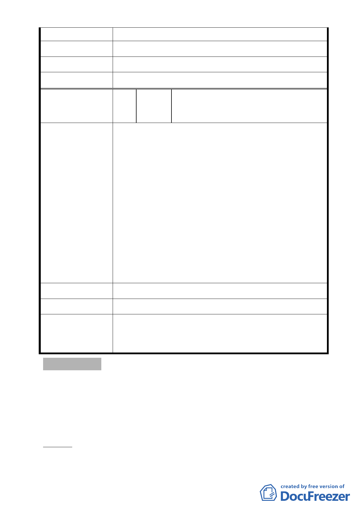

2. 重劃完成後住戶沒有取得房子居住。
建 議 辦 法 最好政府配一間國宅給拆遷戶。
市 府 回 覆 意 見 同編號 2
委 員 會 決 議 同編號 1
編
號4
陳情人
蘆洲里里辦公處陳明霖里長等 16 人連署
陳情
有關臺北市內湖區蘆洲里附近工業區細部計畫案內市地
重劃 B 區之山坡地取消管制範圍，陳情人意見說明如下
（委託蘆洲里里長轉陳）：
一、 蘆洲里地區長期以來環境及生活品質低落，經市府
有心推動本區進行都市計畫與市地重劃，但自 100
陳情理由
年 8 月 29 日公告都市計畫至今仍無明顯進度，詢
問都發局及土地開發總隊皆表示須待重劃 B 區之山
坡地解除管制後方可進續辦理重劃相關程序。
二、 重劃 B 區之山坡地解除管制對於地區之發展有正面
幫助，陳情人等皆同意重劃 B 區之山坡地解除管
制，敬請市府儘速完成相關程序並繼續推動本區之
市地重劃，帶動蘆洲里之發展。
建議辦法
市府回覆意見
本修訂案內有關研提全市山限區調整原則，增列「原公告
委 員 會 決 議 之山限區無環境敏感地區之虞者」乙項，餘依市府公展計
畫書、圖及本次會議所送補充資料內容通過。
參、研議事項
案由：為「修訂『變更臺北市文山區景美溪左岸（萬壽橋至道南
橋間）機關用地、公園用地、道路用地為第三種住宅區、道
路用地、公園用地細部計畫案』內有關重劃規定事項案」提
請研議。
說明：
一、本案位於景美溪左岸之新光路l段，北鄰萬壽橋、南鄰近道南
-7-